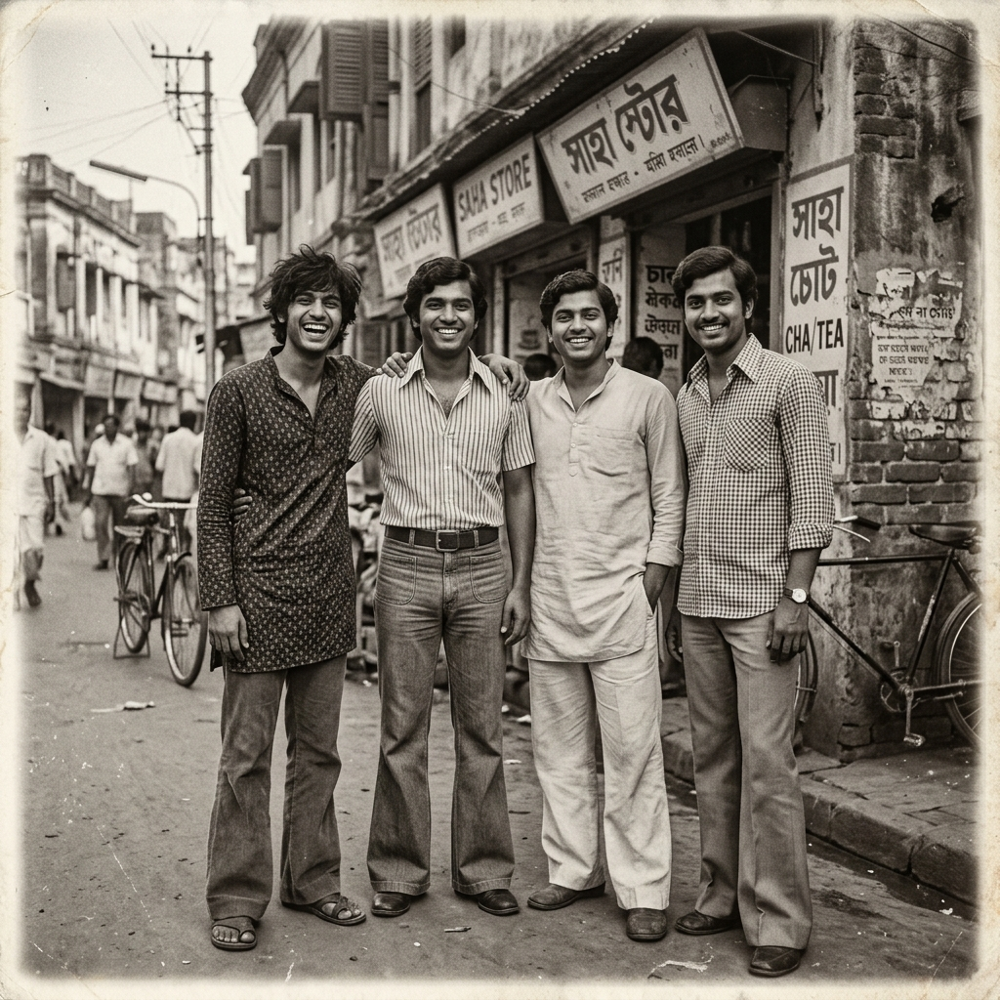
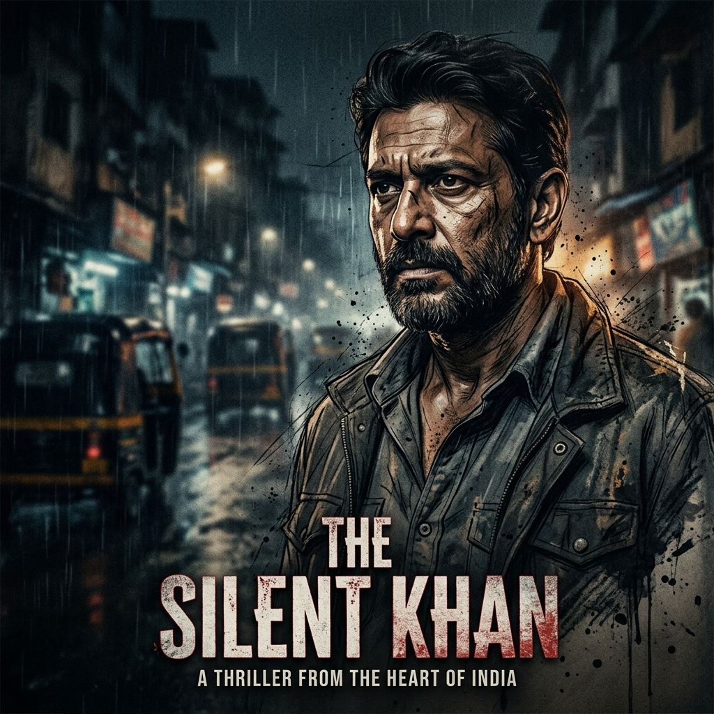
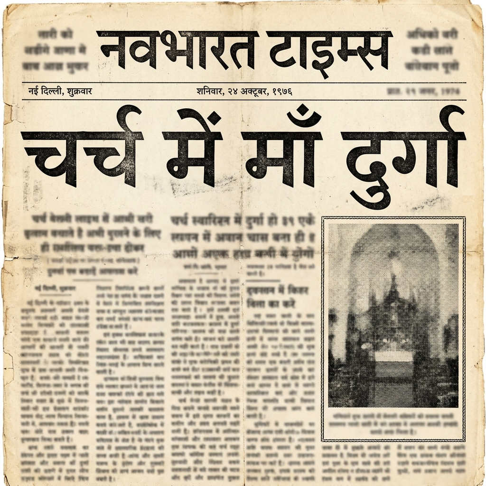
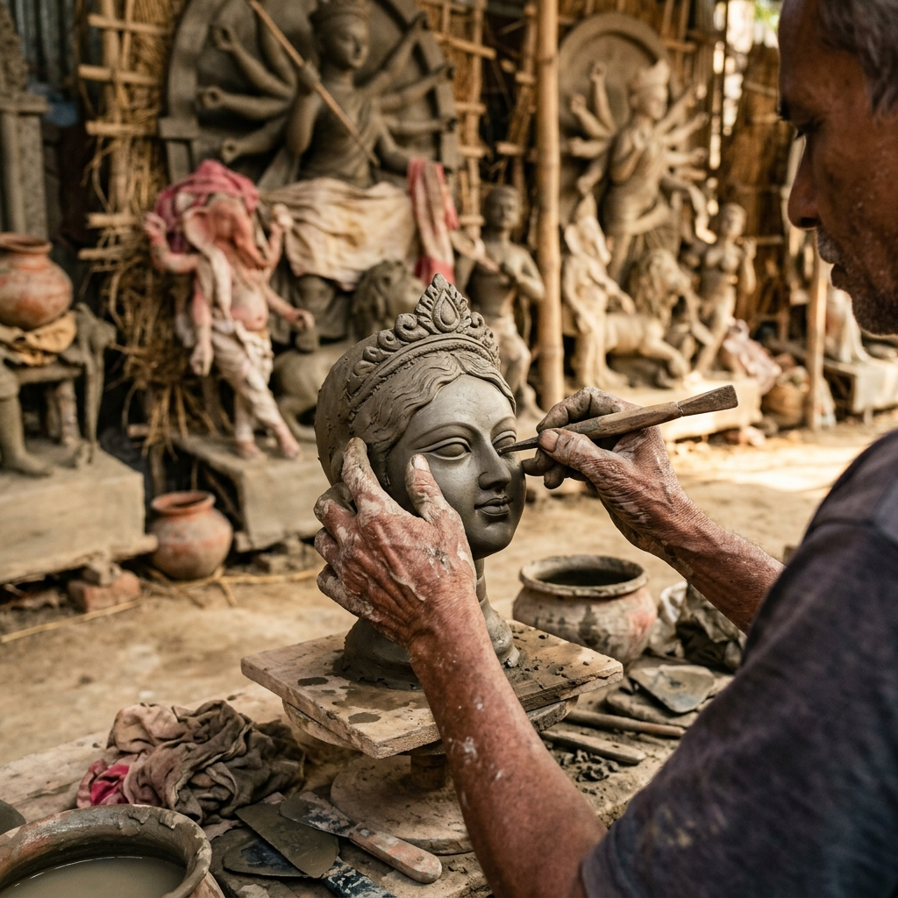
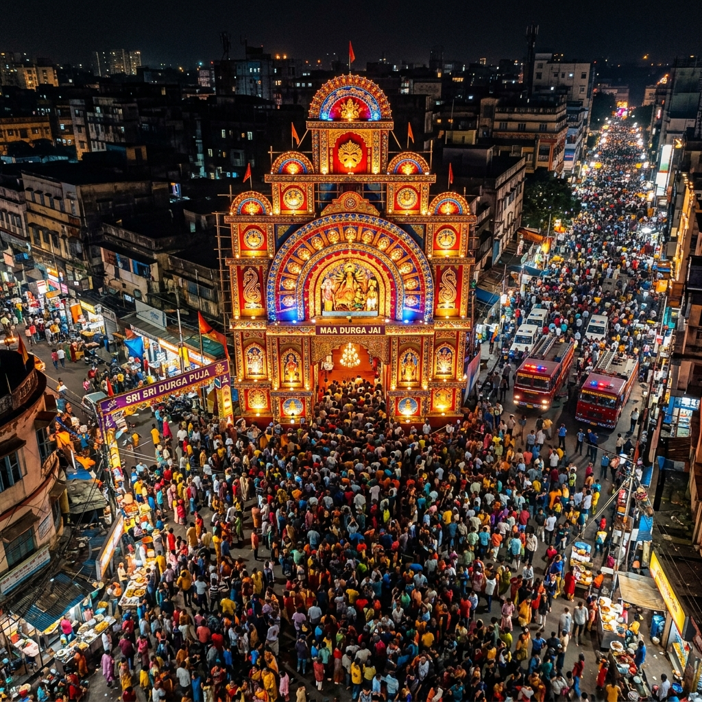

Documentary Film
VFX Storyboard & Client Guide
A comprehensive scene-by-scene breakdown, visual references, and post-production agenda for the upcoming director review meeting.
Project Overview Layout Timeline
This layout outlines the key visual effects (VFX), archival reconstructions, and artificial intelligence sequences required to complete the 16-minute documentary film. The goal of the upcoming meeting is to review these sample styles, gather raw assets from the director, and align on timeline priorities.
| Timecode | Sequence Name | Core Technique | Status |
|---|---|---|---|
| 01:18 | Samar's Picture Sequence | Ken Burns / Still Animation | Needs Asset |
| 01:25 | Four Friends AI Backstory | AI Face-Consistent Images | Needs Asset |
| 02:09 | OTT Character Introduction | Freeze-Frame VFX & Gritty Sketch | Sample Ready |
| 05:15 | Newspaper Archive Headline | 3D Prop Zoom & Typography | Sample Ready |
| 09:40 | Sculptor B-Roll | Macro Cinematography B-Roll | Sample Ready |
| 13:29 | Water Reservoir Burst | AI Video Simulation (3 Floors High) | Sample Ready |
| 14:35 | Chowk / Pandal Overlay | Footage Compositing / Matte | Sample Ready |
Scene Details & Sample Visuals Style Guide
Goal: Create a respectful motion/still memory sequence for the late fourth friend, Samar, whose video footage is completely missing.
- Animate single or multiple historical photographs.
- Apply professional dust/grain and subtle camera movements.
- Ending screen: Fade to black with text "Samar died in [Year]."
No Image Yet
Awaiting original picture from client to animate.
Goal: Establish the backstory of all four friends during their younger years in the 1970s.
- Generate stylized AI portraits of the four friends together using face references.
- Match period-specific Indian clothing (bell bottoms, oversized collars, classic kurtas).
- Convert to classic B&W film texture.

Goal: Create a high-energy, stylized character intro matching premium streaming shows (e.g., The Family Man).
- Video freezes on actor's face in high motion.
- Background and character dynamically sketch out / paint over with graphic overlay.
- Industrial/gritty typography naming lower-third slides in.

Goal: Building transformed into a realistic Durga Puja pandal. Added Durga idol, decorations, and a small gathering of devotees worshipping.
- Original architecture, camera angle, and street layout fully preserved.
- Natural daylight maintained for an authentic neighbourhood festival atmosphere.
- Durga idol, marigold garlands, and festive lighting composited seamlessly into the building facade.

Goal: Visual of hands physically opening a vintage 1970s Hindi newspaper to an archive story.
- Main Headline: "चर्च में माँ दुर्गा" (Goddess Durga in Church) must be perfectly crisp and easy to read.
- Reference photo shown cleanly in right column.
- Rest of columns and side text blurred out to keep viewer focus.

Goal: Visually cover the segment discussing meeting Alok Sen (sculptor) in 1980.
- If a real photo of Alok Sen is found, we will use it with animations.
- Fallback/B-Roll Plan: High-quality close-up macro shots focusing on hands modeling a clay Durga Puja idol.
- Deep shadows, soft workshop lighting, focusing on texture of clay.

Goal: High-impact simulation of a pressure explosion causing water to shoot from a field.
- Water spout must reach 3 floors high, visibly towering above background structures.
- AI video generation ensures hyper-realistic water spray, mud splash, and scale.
- Timing: Burst happens at 13:29, settling by 13:50 to show the quiet field.
Goal: Overlay a historical festival pandal structure over the modern city square (chowk) footage.
- Pandal must look large, traditional, and festive.
- Crowd Constraint: Ground level should look packed and dense with people, but no crowds standing on roofs/structures.
- Composites cleanly over parked fire tenders.

📝 Collaborative Review Notes
Use this shared notebook to draft general meeting directives, adjustments, or global feedback together in real-time during the review.
Client Questionnaire & Asset Request Critical Meeting Agenda
Director Verification & Asset Checklist
Meeting me client se ye details verify karni hai aur in materials ko save karke hume handover karne ke liye kehna hai:
Samar ki death kis saal hui thi? Final line me likha jayega: "Samar died in [Year]." Ye saal exact confirm kar lijiye.
Kya unke paas Samar ki jawani (youth) ki koi photograph hai? Agar physical photo hai toh mobile scan ya high-res scan provide karein.
Charon doston ki jawani ki alag-alag black & white photos chahiye. Inhi faces ko base reference banakar hum AI models train karenge taaki group photos historical/consistent lagein.
Character introduction kis frame pe stop hoga? Aur characters ke names on-screen kis font/language me chahiye (English/Hindi)?
Newspaper headline ke right side me jo reference photo dikhani hai, kya wo unke paas ready hai? Aur newspaper ki headline kis archive date ke sath print karni hai (e.g. 15th October 1978)?
Kya Alok Sen ki koi authentic photo mili hai? Agar nahi mili, toh kya unhe hamari clay-sculpting hands close-up visual direction pasand aayi (B-Roll)?
Chowk waala shot jisme fire tenders parked hain, wo exact raw camera clip hume capture karke/drive pe de de. Pandal uske perspective me match karke 3D track hoga.
Final master export specifications kya hain? (e.g. 4K UltraHD, 1080p, aspect ratio 16:9 cinematic scope, or standard format)? Final project delivery kab tak target karni hai?